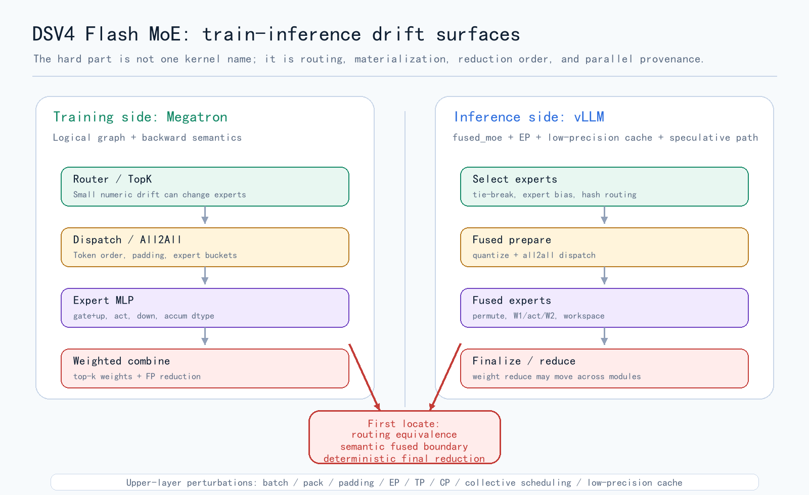
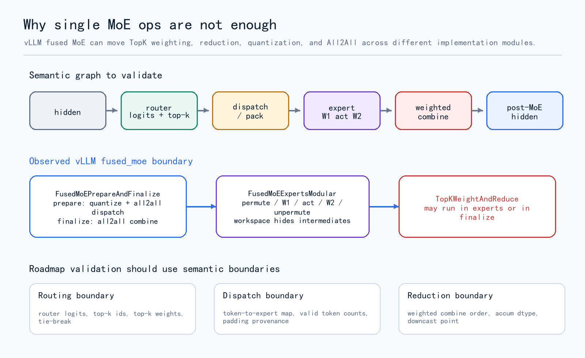
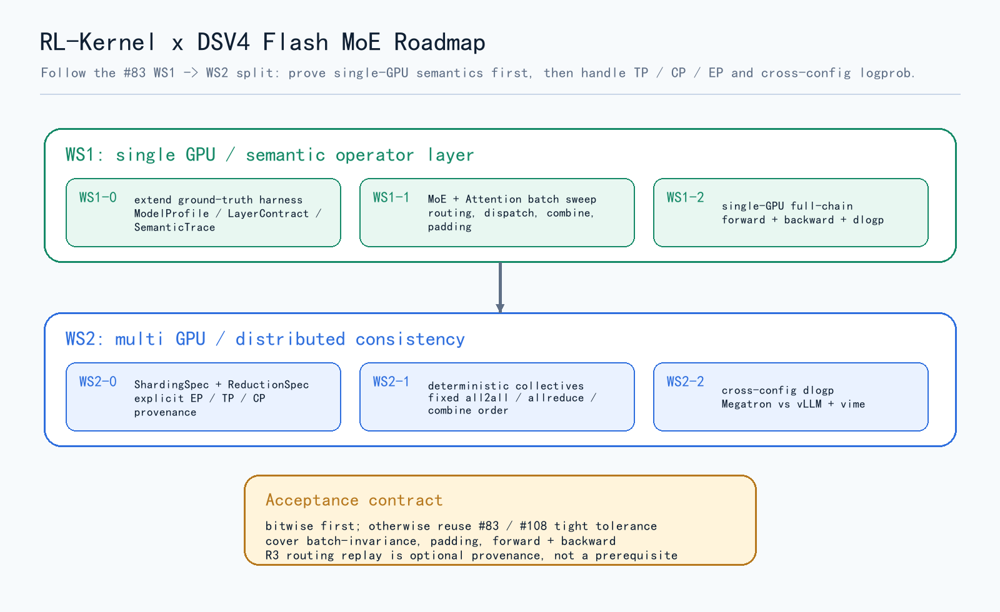

RL-Kernel
RL Kernel进阶计划：DeepSeek V4 Flash MoE 算子级训推一致性
面向 DeepSeek-V4-Flash 的 operator-level 训推一致计划
我们正在开发 Qwen3 Dense 模型的算子级别训推一致性工作，并严格沿用 RL-Kernel #83 里的 WS1 -> WS2 拆分方式。接下来，我们准备把这套方法推进到 DeepSeek-V4-Flash-0731 这样的 Flash MoE 模型上。
晚点我们会公布关于 v4 的详细 Roadmap，届时会放到 RL-Kernel issue 中。
在 Dense 模型里，我们更多面对的是 matmul、attention、logprob 这类连续数值路径；到了 MoE，问题会变得更离散：router 只要有一点数值差异，top-k expert 就可能变；dispatch 只要 token 顺序、padding 或 all2all layout 不同，后面的 expert 输入就不再是同一个张量；最后 weighted combine 的浮点归约顺序只要变化，dlogp 就可能随 batch、pack、TP、CP、EP 配置漂移。

为什么更容易漂
公开示例显示，推理侧会把 expert parallel、低精度 cache、分块 prefill、混合 attention、投机解码等工程路径放进同一个执行图里。这说明推理侧不是一个朴素 PyTorch graph，而是一个高度工程化、融合化、并行化的执行图。
边界：训练侧 Megatron；推理侧 vLLM；硬件 NVIDIA Hopper；一致性口径沿用 RL-Kernel #83 / #108，bitwise 优先，否则 tight numerical tolerance；覆盖 forward + backward、deterministic reduction order、batch-invariance、padding 和并行配置。投机解码暂不作为第一阶段训推一致主线，只记录它对推理 control flow 的影响。
问题一：routing 是离散决策
MoE router 会从 hidden state 算出 router logits，再选择 top-k experts。这里的差别并不只是最后一位不一样：如果两个 expert 的 score 很接近，训练侧和推理侧只要在 accumulation dtype、tie-breaking、expert bias、hash routing 或 padding 处理上有一点差别，最终选择的 expert 就可能不同。
一旦 expert id 不同，后面就不是同一个 MLP 在算同一个 token。这个漂移会从连续数值误差变成离散路径分叉。Roadmap 的处理方式是先在 WS1 里记录并对齐 router logits、top-k ids、top-k weights、tie-breaking 规则和 routing metadata。
这里会特别关注 router softmax 和 top-k。不同实现路径可以是 CUDA，也可以是 Triton 或其他 backend，但公开 Roadmap 只强调一件事：先做精度对齐和稳定性测试，再决定是否进入 fast path。
问题二：单算子边界可能没有意义
朴素理解里，MoE 可以拆成 gatter/gather -> gate_and_up -> down -> scatter。但这套拆法不一定对应真实推理执行边界。
vLLM 很可能走 fused_moe 这一类融合路径，把 MoE 路径组织成几个语义阶段：准备、专家计算、加权归并。prepare 里可能包含 activation quantization 和 dispatch；experts 里可能包含 permute、专家 MLP、unpermute 和 workspace；归并则可能落在末端阶段。
训练侧也不能默认一样。Megatron 可能保留更显式的 router、dispatch、expert MLP、combine 边界，也可能在某些路径里使用 grouped GEMM、activation packing 或通信 overlap。训练侧 materialization 和推理侧 fused materialization 都需要调研，不能把任意一边的 kernel 边界当成天然合同。

真正要比较的边界
routing boundary、dispatch boundary、expert boundary、shared-expert boundary、reduction boundary。vLLM backend 是 candidate backend；RL-Kernel reference path、semantic trace 和 deterministic comparison 才是合同真源。
问题三：final reduction 是核心漂移点
DSV4 MoE 里最值得盯住的位置，是 weighted expert combine。多个 expert output 乘以 top-k weights 后要合并回 token hidden state，这里就是 MoE 的最终浮点归约点。
往下看，它依赖 expert MLP 的 matmul accumulation、activation、low precision scale、downcast；往上看，它会受到 batch、pack、padding、EP all2all、TP shard、CP boundary、collective scheduling 的影响。很多表面上像 batch 不一致或 padding 不一致的问题，最后都会在这个 reduction 点上表现成数值漂移。
共享专家、反向传播和低精度路径也会放在同一个视角下看：优先打开或复用已有的确定性开关，优先评估成熟 backend；如果某些 kernel-level 展开、调度或融合选择会改变归约顺序，就只把它作为实现风险记录，不在模型语义层面引入新的解释。
问题四：Attention 会污染 MoE
DSV4 Flash 不是只有 MoE。推理侧还可能有 SWA、HCA / CSA、chunked prefill、FP8 KV cache、FP4 indexer cache、以及面向长上下文的压缩或混合 attention 路径。用户最终看到的是 MoE 漂移，但真正的输入差异可能已经在 attention block 里发生了。
所以 attention boundary 要进入 P0，HCA / CSA 等名称不会直接等价成验收算子，仍然要看真实实现边界。WS1 先保证进入 MoE 前的 hidden-state boundary 可记录、可对齐；如果 attention 纳入 full-chain，就必须区分 attention-induced drift 和 MoE-induced drift。
问题五：RL 最终感知的是 dlogp
dlogp = training_recomputed_logp - rollout_old_logp
MoE routing、expert combine、attention cache、TP vocab-parallel logprob、padding mask、action mask 都可能最后汇到 dlogp。如果只看单个算子误差，而不看 active response/action tokens 上的 dlogp，就可能错过真正影响 PPO / GRPO 更新的漂移。
R3 不作为前提
R3 routing replay 很有用，但不把它作为 DSV4 MoE 训推一致 Roadmap 的前提。R3 可以 replay rollout 侧 routed experts，减少一类很大的 routing mismatch；但如果 Roadmap 依赖 R3 才成立，我们就无法判断 Megatron router 和 vLLM router 本身是否语义一致。
R3 应该是 audit / noise reduction / provenance 工具，而不是 MoE semantic contract 的真源。如果启用，必须写入 provenance；如果没有启用，同一份 MoE contract 仍然要能独立验收。
RL-Kernel 的 WS1 -> WS2
我们已经找到了 DSV4 Flash MoE 在 RL-Kernel 框架里的拆解方式：不是为 DSV4 新建一套独立数值标准，而是沿用 Dense 模型里已经形成的 WS1 -> WS2 设计理念。

WS1：单 GPU / 语义算子层
扩展 ground-truth harness，记录 ModelProfile、LayerContract、SemanticTrace；做 MoE semantic boundary sweep；最后跑 single-GPU full-chain forward + backward + dlogp。
WS2：多 GPU / 分布式一致性
把 TP、CP、EP、DP、batch、pack、padding、collective order 写进合同；做 deterministic collectives 和 Megatron vs vLLM 的 cross-config dlogp 对齐。EP 更容易暴露 routing / dispatch 问题；TP、DP 和 CP 更容易把 MoE block、logprob、communication overlap 混在一起。具体怎么改 backend、怎么包现有 kernel，不在这里展开。
实验矩阵只用来隔离实现差异，不把模型架构层面的新语义引入对比本身。
后续 Issues 拆分
| Issue | 重点问题 | 验收口径 |
|---|---|---|
| DSV4-WS1-0 | ModelProfile + SemanticTrace | 同 checkpoint / tokens / mask / seed；fail closed |
| DSV4-WS1-1 | MoE semantic boundary sweep | routing / dispatch / combine 在 batch 和 padding sweep 中对齐 |
| DSV4-WS1-2 | single-GPU full-chain | forward + backward；报告 drift percentiles 和 dlogp |
| DSV4-WS2-0 | EP / TP / CP provenance | 支持布局下对齐；per-rank drift 必须报告 |
| DSV4-WS2-1 | deterministic collectives | 不支持的 collective / topology 组合 fail closed |
| DSV4-WS2-2 | cross-config dlogp | active tokens 上对齐；报告 RL 健康指标 |
加入我们
DSV4 Flash MoE 训推一致不是一个单点 kernel 任务，它横跨 Megatron、vLLM、MoE routing、expert parallel、Hopper kernel、低精度数值和 RL logprob 诊断。我们接下来会围绕上述 WS1 / WS2 issues 推进开发。
如果你熟悉 CUDA / Triton / Hopper、vLLM fused MoE、Megatron MoE、分布式通信、或者 RL post-training 里的 logprob / KL / ratio 诊断，欢迎加入 DSV4 MoE 训推一致的开发工作。我们希望把这件事做成可复用的 operator-level infrastructure。如果要加入 MoE 的开发，可通过以下方式联系：官方邮箱 team@rl-align.org；发起人邮箱 vensenmu@gmail.com；微信 iZzy07Zoey12。
致谢
感谢 Embedded LLM, Chutian Wang, Jiajie Li, Siru He, Xiaosong Ma, Kaijie Lin, Jian Zhang, Bosong Yang, Yunxiang Cai, Huihong Lu, Zhewei Liu, Zhengtao Chen 和 Ziying Tao, Zhipeng Wang, Vensen Mu 在 Dense 模型算子级训推一致工作中的付出，以及对 DSV4 MoE 调研的支持和贡献。